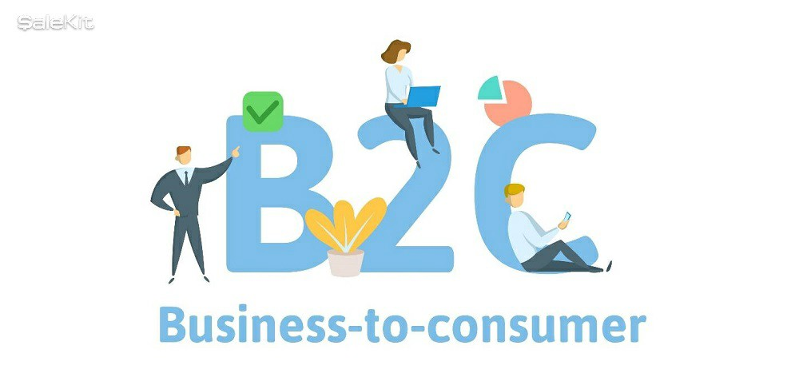

PRINCIPAL
B2B
B2E
C2C
B2G
C2G
ECOMMERCE DE PRODUCTOS DIGITALES
ECOMMERCE DE INFOPRODUCTOS
ECOMMERCE DE SERVICIOS
ECOMMERCE SOFTWARE AS A SERVICE (SAAS)
ECOMMERCE OPEN SOURCE
B2C
BUSINESS-TO-CONSUMER(B2C)
Negocio a consumidor o B2C se refiere a la estrategia
que desarrollan las empresas comerciales
para llegar directamente al cliente o consumidor final.
B2C es el tipo de operación que realiza una compañía
cuando los clientes son muchos y donde se espera
un predominio de la dirección de mercadotecnia.
Las estrategias de marketing llevadas a cabo
dentro del business to consumer normalmente suelen
enfocarse a situaciones en las que el número de clientes
potenciales es alto. Crear un tráfico de este
público y lograr fidelizar a los consumidores son
algunas de las metas que las firmas usuarias
de B2C se plantean normalmente. Al dirigirse
esencialmente al cliente o usuario final.
